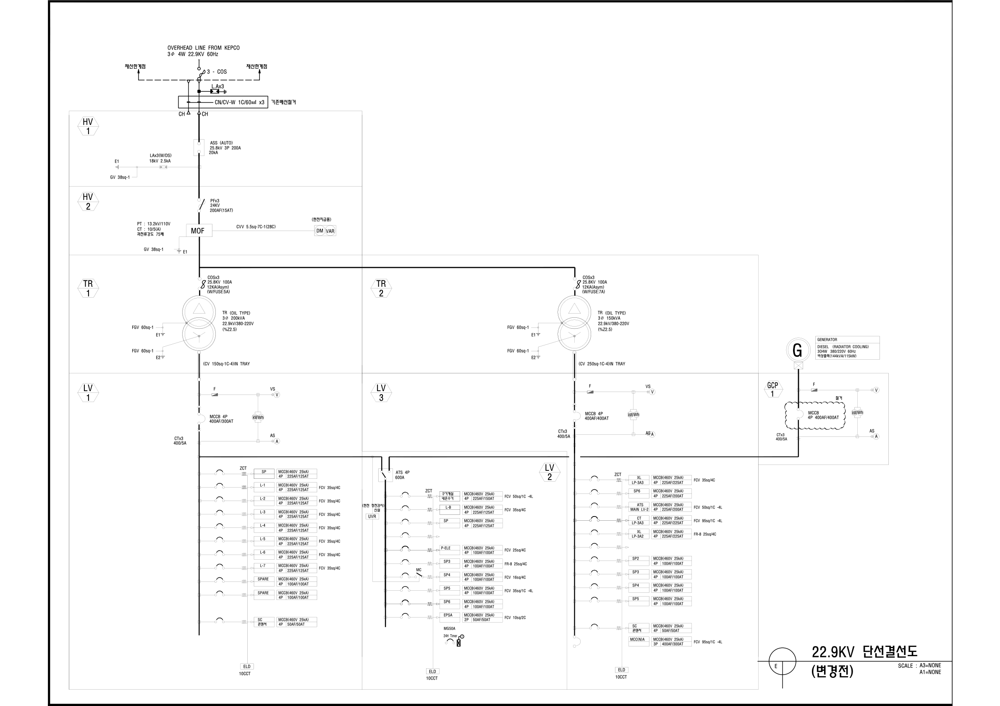
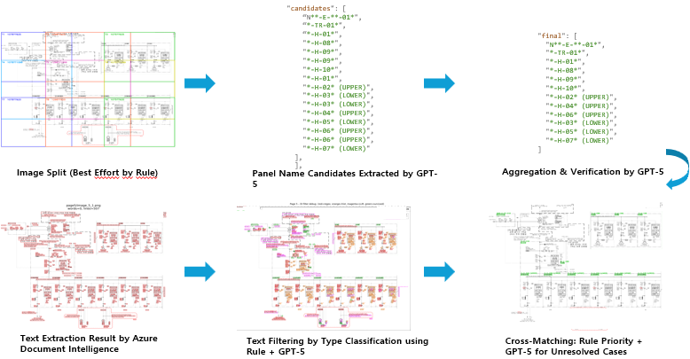
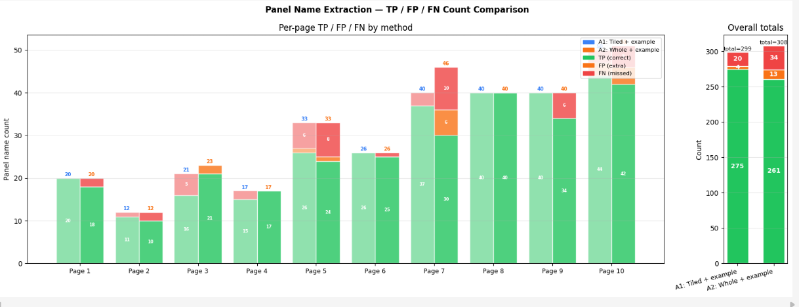
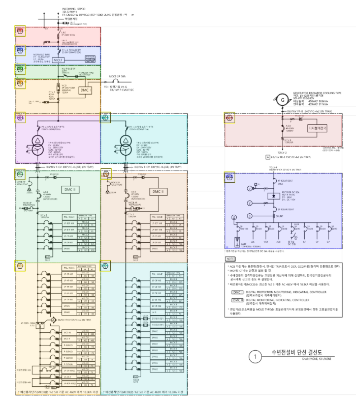
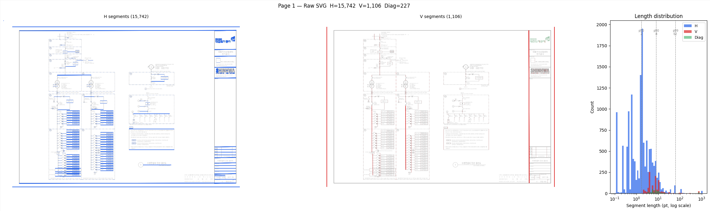
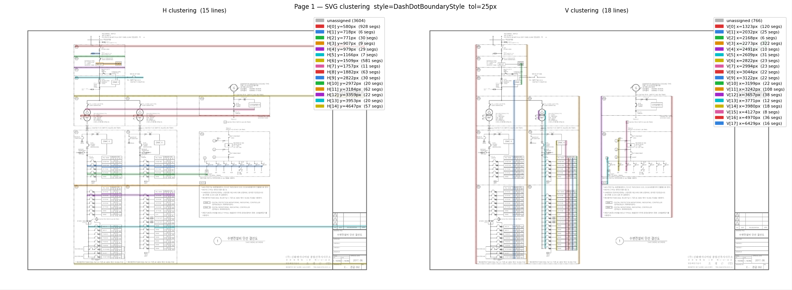
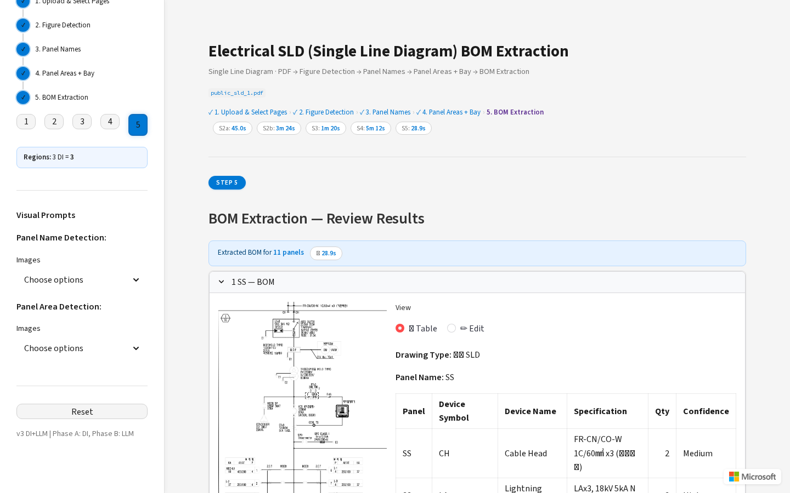

The Problem
Electrical engineering drawings — especially single-line diagrams (SLDs) — are notoriously hard to parse programmatically. They combine dense symbols, small text, and complex geometric structures, all varying in style across documents and vendors.

Traditionally, extracting a Bill of Materials (BOM) from these drawings has been a manual task — engineers would read through each diagram page by page and transcribe component lists by hand. It's time-consuming, error-prone, and doesn't scale.
The obvious question: can a Vision Language Model automate this? We had to rely primarily on the visual content of PDF-converted images alone — without guaranteed access to CAD vector data or metadata. That constraint shaped every technique described in this post.
Warning: Why naive LLM inference fails: Feeding a full diagram page to an LLM and asking for a BOM fails catastrophically — too much visual complexity in a single context. Components get missed, hallucinated, or assigned to the wrong panel.
This post shares the practical techniques we discovered while building a pipeline to solve this problem. The methods are general — applicable to any task that requires extracting structured information from visually complex technical documents.
Pipeline Architecture: Divide and Conquer
The core insight: the unit of analysis must be the panel, not the page.
A single diagram page can contain dozens of panels, each representing a distinct electrical cabinet with its own components. Asking a model to extract a complete BOM from an entire page is asking it to simultaneously locate, read, and count every component across all panels — a task that proved too complex even for GPT-5.
The solution was to first identify and crop each panel as an independent region, then extract the BOM panel by panel. This transformed an intractable whole-page problem into a series of manageable, well-scoped sub-tasks.
Technique 1: DI-First Detection with Targeted LLM Supplement
The first challenge is identifying all figure regions on each page — the panel diagrams that contain the actual electrical components. SLD pages typically mix diagrams with title blocks, revision tables, and legend boxes (often along the right edge or bottom). All of these must be located before we can isolate the panels.
The key design decision: use Azure Document Intelligence as the primary detector — and reserve the LLM
only for gaps that DI misses. DI's prebuilt-layout model is fast, deterministic, and cheap
compared to a vision LLM call. By maximizing DI coverage first, we minimize the number of expensive LLM invocations
needed to achieve full detection.
Two-Pass DI: Catching Occluded Regions
A single DI pass often misses figures that are visually occluded by larger detected regions — particularly smaller panels nested within or adjacent to large ones, and tables along the page edges. The solution: white-fill detected regions and re-run DI to reveal what was hidden underneath.
# Pass 1: Detect figures on original page
pass1 = analyze_page(di_client, "prebuilt-layout", image_path)
pass1_bboxes = [f["bbox"] for f in pass1["figures"]]
# Pass 2: White-fill Pass 1 regions → re-detect
if pass1_bboxes:
white_fill_regions(image_path, pass1_bboxes, whitefill_path)
pass2 = analyze_page(di_client, "prebuilt-layout", whitefill_path)
# Merge & deduplicate by IoU
all_figures = pass1["figures"] + pass2["figures"]
deduped = _dedup_figure_bboxes(all_figures, iou_threshold=0.5)This two-pass approach is especially effective at catching tables and annotation blocks along the right edge or bottom of the page that DI initially subsumes into a single large region.
LLM Only for the Remaining Gaps
After two DI passes, most figure regions are covered. For any remaining gaps, GPT-5 is called once with the DI-detected regions marked in purple on the image. The model only needs to identify unmarked areas — a much simpler task than full-page detection from scratch.
Key finding: DI detection is ~10× faster and significantly cheaper per call than a GPT-5 vision request. By using DI as the primary detector and LLM only for supplemental gap-filling, the pipeline achieves comprehensive coverage while keeping cost and latency low. The two-pass technique further reduces the LLM's burden by maximizing what DI can find on its own.
Technique 2: Hybrid LLM + OCR for Text Localization
To segment panel areas, we first need to know where panel names appear in the image. Panel names act as anchor points — once we know their locations, we can use them as seeds to identify the boundaries of each panel region.
Neither GPT-5 nor OCR alone is sufficient:
- GPT-5: identifies what the text says, but imprecise on exact pixel locations
- Azure Document Intelligence: precise coordinates for all text, but struggles with domain-specific abbreviations
The solution: run both in parallel and cross-match results.

Tile-Based Name Extraction
Rather than feeding the entire page to the LLM, we split it into overlapping vertical tiles (2000px wide, 400px overlap) and extract panel name candidates from each tile independently. This reduces visual complexity per LLM call and improves recall.
# Split page into overlapping tiles for LLM name extraction
tiles = tile_page(image_path, tile_width=2000, overlap=400)
# Extract names from each tile independently
for tile_img, tile_coords in tiles:
names = extract_names_from_tile(tile_img, llm_client, deployment)
# LLM identifies SHORT CODES: "HV 1", "TR-2", "LV 3A"
# Rejects: component labels, wire tags, terminal IDs
Hallucination Guard
LLMs sometimes fabricate panel names that don't exist in the image. We cross-validate all LLM-extracted names against the DI OCR text pool using fuzzy matching:
def hallucination_guard(names, di_lines):
verified = []
for name in names:
if _name_in_ocr(name, ocr_texts): # 3 matching modes:
verified.append(name) # 1. Exact substring
# 2. Same length, ≤1 char diff
# 3. Alphanumeric stripping (ignore spaces/punctuation)
else:
print(f" Dropped '{name}' — no OCR match")
return verified6-Pass Rule Matching Engine
Once names are verified, we locate their exact pixel positions via a cascading rule engine that matches panel names against DI OCR bounding boxes with decreasing confidence:
def rule_match_panel_name(panel_name, di_lines, max_merge=3):
# Pass 1: Exact match (case-insensitive) → confidence 1.0
# Pass 2: Alphanumeric (O/0, I/1 tolerance) → confidence 0.9
# Pass 3: Substring containment (≥3 chars) → confidence 0.75
# Pass 4: Multi-line merge (adjacent DI lines) → confidence 0.7
# Pass 5: OCR-confusable (1-char diff, v↔y, s↔5) → confidence 0.6
# Conflict resolution: shared bbox → keep highest confidence
# LLM fallback: for still-unmatched namesKey finding: The LLM identifies what the panel names are (semantic), while Azure DI provides where they are (geometric). The rule engine bridges the two with OCR-aware fuzzy matching. This hybrid approach is significantly more robust than either system alone.
Technique 3: Iterative Locate → Verify with Oscillation Guard
With panel names located, the next challenge is identifying the full panel boundary. This is the hardest stage: panels can be irregularly shaped, share edges with neighbors, and have boundaries formed by a mix of dashed, solid, and implied lines.
Rather than asking the LLM to find the boundary in one shot (which is unreliable), we implemented an iterative Locate → Verify correction loop with up to 10 attempts per panel.
Visual Prompt Composition
Each iteration constructs a carefully composed image for the LLM, providing spatial context through color-coded overlays:
Locate Input
- Blue box — target panel name (
NAME:{panel_name}) - Green boxes — other panels as spatial reference
Verify Input
- Orange box — proposed panel bbox
- Blue box — panel name location
- Green boxes — neighboring panels
The verify step analyzes each of the four edges independently:
// Verify response — per-edge analysis
{
"valid": false,
"edges": {
"x1": { "status": "expand", "delta": -45, "corrected": 120 },
"y1": { "status": "ok" },
"x2": { "status": "shrink", "delta": -30, "corrected": 850 },
"y2": { "status": "expand", "delta": 60, "corrected": 1200 }
},
"corrected_bbox": [120, 200, 850, 1200]
}Oscillation Detection
A critical failure mode: the LLM oscillates on an axis — expanding, then shrinking, then expanding — never converging. We detect this using a 3-value history per axis:
# Track last 3 corrections per axis
axis_history = {axis: [] for axis in ["x1", "y1", "x2", "y2"]}
for attempt in range(1, max_tries + 1):
# ... locate and verify ...
for axis in AXES:
hist = axis_history[axis]
if len(hist) >= 3:
a, b, c = hist[-3:]
# Detect: (a < b > c) or (a > b < c) → oscillating
if (a < b and b > c) or (a > b and b < c):
corrected[axis] = hist[-2] # Freeze at previous valueThe loop processes all panels on a page in batch mode — a single locate-all call
positions all panels simultaneously, reducing per-panel LLM calls from N to 1.
Technique 4: Few-Shot Visual Prompting
Text prompts alone struggle to convey spatial concepts like "what a panel boundary looks like." The visual vocabulary of electrical drawings is too domain-specific to describe in words. The solution: provide GPT-5 with few-shot reference images directly in the prompt.
def locate_and_verify_batch(..., guide_image_paths=None):
guides = list(guide_image_paths or [])
# Prepend guide images before the actual input:
loc_raw = call_llm(
llm_client, deployment, locate_prompt,
image_paths=guides + [locate_img_path], # Guides first
)
The benefits:
- Reduces prompt length — no need to describe visual concepts in words
- Improves consistency — the model interprets boundary types correctly across varying layouts
- User-customizable — swapping in new guide images adapts to new drawing styles without code changes
Technique 5: Reasoning Mode — Performance vs. Cost
GPT-5's reasoning capability (reasoning={"effort": "low|medium|high"}) significantly affects
both accuracy and latency. We ran systematic experiments across all four reasoning levels in two key pipeline stages:
image area detection and BOM extraction.
Reasoning in Image Area Detection
Each reasoning level was tested 3 times on the region detection stage (GPT-5 detects and verifies figure boundaries).
Detection Quality

high converged in fewer iterations (2),
while medium/low sometimes needed 3.Verification Iterations

high: 2.0, medium: 2.7, low: 3.0, none: 2.0.
Lower reasoning needs slightly more iterations but converges to the same quality.Processing Time

high/medium ~170s, low ~52s, none ~15s.Key finding: All reasoning levels (low, medium, high) produced similar quality and noticeably better results than none,
but with increasing latency (~3× from low to high). Since there was no meaningful quality difference among reasoning levels,
we chose low as the optimal setting — getting the benefit of reasoning at minimal latency cost.
Reasoning in BOM Extraction
For BOM extraction — reading component lists from cropped panel images — reasoning has a more pronounced accuracy impact:

Recommended Configurations
Key insight: Different stages need different reasoning levels.
Use low for spatially-grounded tasks with rich visual context,
medium for semantically-demanding reading tasks.
Optimize inputs before scaling compute.
Technique 6: SVG Vector Data for Boundary Detection
PDF files converted from CAD tools often retain a vector layer beneath the raster image. We extract this SVG layer directly using PyMuPDF and parse out horizontal and vertical line segments from the path data.
# Extract vector layer from PDF
svg_data = page.get_svg_image()
# Parse into H/V segments
h_lines = [seg for seg in svg_segments if abs(seg.dy) < 3.0 and abs(seg.dx) >= 10.0]
v_lines = [seg for seg in svg_segments if abs(seg.dx) < 3.0 and abs(seg.dy) >= 10.0]
The Problem: Too Many Lines
However, the raw output is overwhelming. A single diagram page can contain thousands of line fragments — component symbols, annotation lines, grid lines, and actual panel boundaries all mixed together. The challenge is not extraction, but filtering out the noise to isolate the lines that actually define panel boundaries.
Our approach exploits a simple geometric property: real panel boundary lines are long, consistent, and concentrate in a narrow position band — unlike symbol lines, which are short and scattered. We implemented two algorithms to detect this pattern depending on the line style:

1. Chain-Based Clustering (solid / dash-dot lines)
Scan fragments in order of position. If the next fragment is close enough, extend the current group. If the gap is too large, start a new one. Discard any group that is too short or too sparse to be a real boundary.

2. Density-Peak Clustering (dotted lines)
Dotted lines have gaps too large to bridge by proximity. Instead, project all fragments onto a ruler and count how many land at each position. Wherever fragments pile up — a spike — that's a boundary line. Find the spikes, ignore the noise.
Handling Style Variation with BoundaryStyleStrategy
Different drawings use different line styles. Rather than hardcoding parameters, we implemented a
BoundaryStyleStrategy abstraction so each style gets its own tuned thresholds without touching shared logic:
class DashDotBoundaryStyle(BoundaryStyleStrategy):
cluster_tolerance_px = 25.0
first_pass_min_density = 0.20 # chain-based
class DottedBoundaryStyle(BoundaryStyleStrategy):
cluster_tolerance_px = 14.0
first_pass_min_density = 0.035 # density-peak
class LineBoundaryStyle(BoundaryStyleStrategy):
cluster_tolerance_px = 25.0
first_pass_min_density = 0.20 # chain-basedUsing Stage 3 Results as Seeds
To assign detected boundary lines to the correct panel, we use the panel name locations identified in Stage 3 as seed points — the same matched positions that came out of the GPT-5 and Azure Document Intelligence cross-matching step. This is where the earlier investment in precise name localization pays off: accurate seed points directly translate into accurate panel boundary assignments.
# Primary: extract from PDF vector text
seeds = extract_vector_text_seeds(pdf_page, panel_names)
# Fallback: GPT-5 with grid overlay
if not seeds:
seeds = detect_panel_seeds_with_gpt5(image_with_grid, panel_names)Seed-Guided Minimal Cycle Extraction
Once seed points are established, boundary assignment follows a four-step hierarchy — from strict line coverage matches down to relaxed overlap checks and canvas edge fallback — ensuring every panel gets a bounding box even under imperfect vector data.
Beyond this hierarchical assignment, the problem can be more fundamentally formulated as seed-guided minimal cycle extraction in a planar graph. The SVG primitives are first converted into a graph representation, where nodes correspond to line endpoints and intersections, and edges represent vector segments. Each seed point acts as a semantic anchor indicating that the corresponding panel region must enclose it.
For each seed, the algorithm searches for closed cycles in the planar graph that contain the seed, and selects the minimal enclosing cycle based on geometric criteria such as area and structural simplicity. This cycle effectively defines the panel boundary, even when the shape is irregular or shares edges with adjacent panels.
# Build planar graph from boundary line segments
G = build_planar_graph(boundary_chains)
for panel_name, seed_point in panel_seeds:
# Find minimal cycle enclosing the seed point
cycle = find_minimal_enclosing_cycle(G, seed_point)
if cycle:
panel_regions[panel_name] = cycle_to_polygon(cycle)By combining hierarchical boundary assignment with seed-guided topological cycle extraction, the pipeline achieves robust and precise panel segmentation, providing clean, context-isolated inputs for downstream GPT-5-based BOM extraction.
Results & Error Analysis
The pipeline achieved 94.21% accuracy (277/294 materials correctly extracted) across 53 panels on 4 diagram pages. Processing time was ~62 minutes from pre-cropped panel images.
A +5.43% accuracy improvement (88.78% → 94.21%) came from iterative prompt refinement based on domain expert review of extraction errors — identifying recurring patterns and translating them into prompt corrections.

Recurring Error Patterns
1. Misreading of Domain Abbreviations
10CCT 1EA (10 circuits, quantity 1) → extracted as CCT 10 EA. Numeric prefix and abbreviation swapped.
2. Multiplier Misinterpretation in 3-Phase Configs
CTx2 / SAx3 suffix treated as component name instead of quantity multiplier →
PTx3 6EA instead of correct PTx3 2EA.
3. Spec vs. Quantity Confusion
Electrical rating numbers alongside component entries mistaken for quantity values.
Key Takeaways
Decompose aggressively. Stage-wise processing with scoped inputs is the difference between working and not working. Break the problem down until each sub-task is tractable for the model.
Visual context beats reasoning effort. Color-coded overlays and few-shot images reduce reliance on expensive reasoning modes. Optimize inputs before scaling compute.
Verify, but stop early. Self-correction loops improve accuracy — but accumulated context can confuse the model. Oscillation detection and early stopping are critical.
Hybrid always wins. Azure DI for precise coordinates, GPT-5 for semantics. Pure LLM solutions lose on precision-critical tasks.
Try It Yourself
The full pipeline code — including the Streamlit HITL demo, all agents, and evaluation scripts — is available on GitHub. Clone the repo, upload your own SLD drawings, and see the extraction pipeline in action.

What's Next
- Combining SVG vector detection (Technique 6) with LLM verification for a hybrid geometric + semantic approach
- Smarter handling of 3-phase quantity notation and electrical specification fields
- Automated evaluation harness for continuous prompt improvement across drawing styles
Stack: Azure OpenAI GPT-5 · Azure Document Intelligence · Python · Streamlit · PyMuPDF